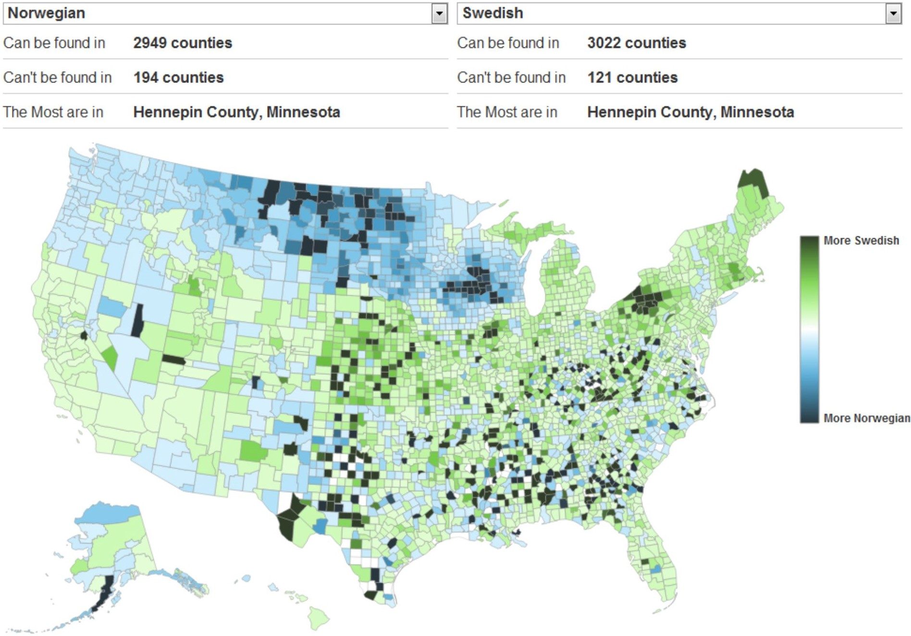
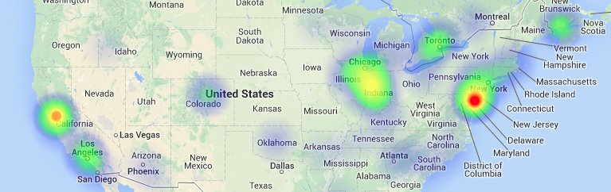

How Maps Lie
Choropleth Map
Pro's
Popular
Shows general patterns clearly
Links variables to locations
Visually effective
Levels of shading/colour represent a range of values
Con's
Gives impression of uniform values within sub-areas
Can only be used for ratio data not absolute values
Often not suitable for showing total values
Can be difficult to distinguish between different shades
Well Exectued Choropleth

Credit: David Yanofsky
Dot Map
Heat Map

Credit: Patrick Wied
Pro's
Pros
Con's
Cons